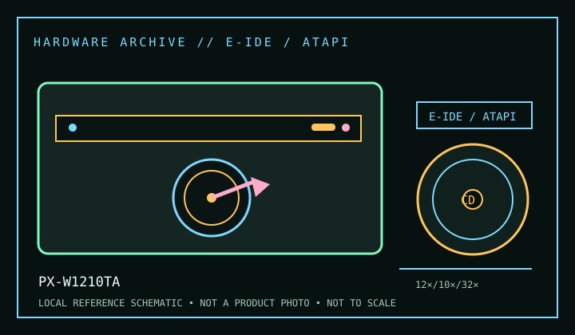

[ CD-R AND CD-RW DRIVES // IDENTIFIED MODEL ]
Plextor PlexWriter 12/10/32A PX-W1210TA
Internal E-IDE/ATAPI PlexWriter with maximum ratings of 12× CD-R write, 10× CD-RW rewrite and 32× CD-ROM read. The archived manual groups PX-W1210TA with the PlexWriter 12/10/32A; check the nameplate before applying family data.

IDENTIFICATION: Confirm the manufacturer label, complete model suffix, interface and firmware revision against the cited manual before installation or archival use. Ratings are maximums; actual performance depends on media, mode, host and software.
Documented specifications
| Subcategory | CD-R and CD-RW drives |
|---|---|
| Exact model | PX-W1210TA |
| CD-R write | 12× |
| CD-RW rewrite | 10× |
| CD-ROM / CD read | 32× |
| Recorded/read formats | CD-R and CD-RW recording; CD-ROM reading. CD-ROM XA, CD-DA, Photo CD, CD-I and multisession access depend on the recorder revision, disc structure and host software; do not treat an unlisted format as verified by this record. |
| Recording modes | Disc-at-Once, Track-at-Once, Session-at-Once, multisession and packet writing are software- and media-dependent. Verify the mode in the application before making preservation copies. |
| Interface / mechanics | Internal E-IDE/ATAPI; 5.25-inch half-height drive. Use the period manual’s master/slave/cable-select instructions and a compatible ATA host channel. |
| Host and operating-system compatibility | A standard ATAPI optical driver and compatible authoring application are required. The drive belongs to the IDE-era PC ecosystem; modern USB-to-IDE bridges can expose basic reads yet fail to pass all ATAPI or recording commands. Legacy software/driver support varies by OS. |
| Firmware / revision notes | Firmware and media compatibility are tied to the exact PX-W1210TA/A variant and region. Check firmware identifier and host controller before any update; do not use firmware intended for a similarly named PX-W1210S/SCSI or OEM unit. |
Compatibility & preservation notes
- A standard ATAPI optical driver and compatible authoring application are required. The drive belongs to the IDE-era PC ecosystem; modern USB-to-IDE bridges can expose basic reads yet fail to pass all ATAPI or recording commands. Legacy software/driver support varies by OS.
- Firmware and media compatibility are tied to the exact PX-W1210TA/A variant and region. Check firmware identifier and host controller before any update; do not use firmware intended for a similarly named PX-W1210S/SCSI or OEM unit.
- For an imaging or recording session, log the exact drive and firmware, interface/controller, operating system, application version, media identifier, selected mode and any read/verification errors. Keep checksummed image copies and logs.
- Handle discs at the edge or center hole and store in cases in a cool, dry place away from direct sunlight. Avoid adhesive labels, abrasive cleaning and undocumented solvents or polishing.
Read support is not write support. A format listed for this drive does not guarantee every disc revision or copy-protection scheme will work.
Sources
- Plextor PlexWriter 12/10/32A (PX-W1210TA) manual, Internet ArchiveArchived manufacturer manual record for the 12/10/32A family; verify the suffix on the physical unit.
- Library of Congress — CD-R and DVD-R/RW longevityArchival handling and media-care context; not a drive-specification source.
- Ecma-394 — Recordable Compact Disc SystemsStandards reference for recordable compact-disc systems, not a guarantee that every drive revision implements every feature.